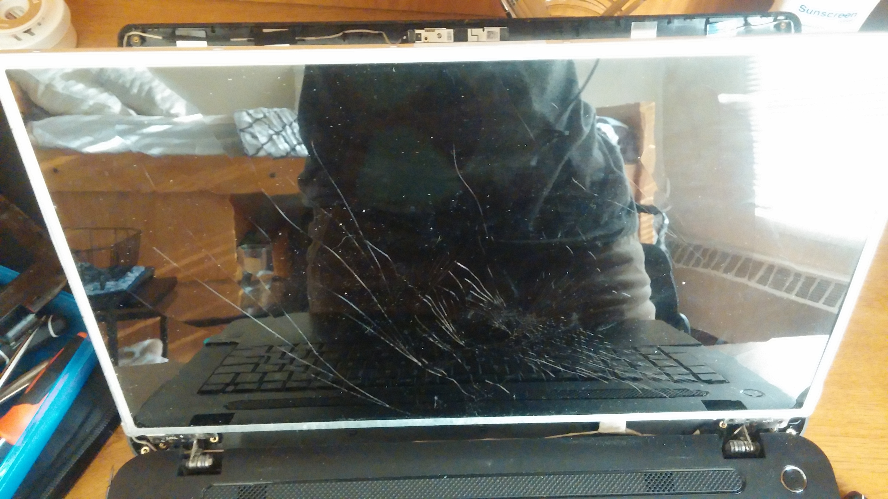
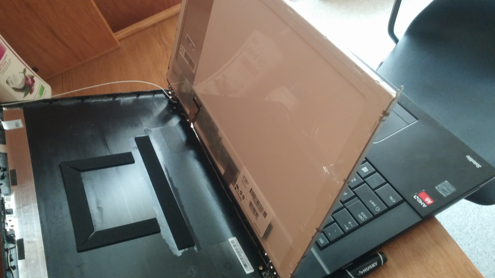
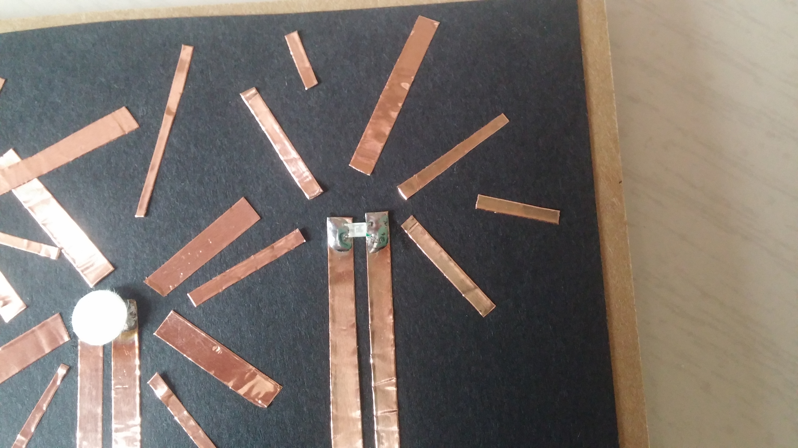
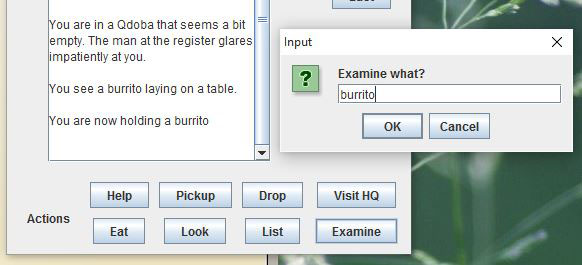
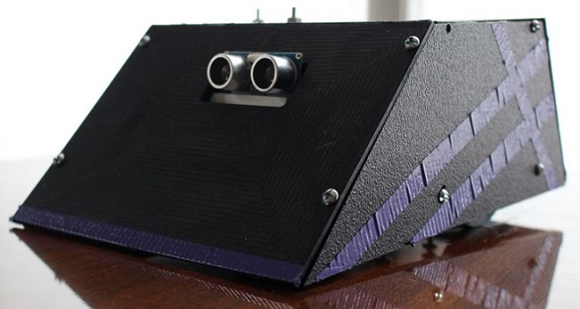
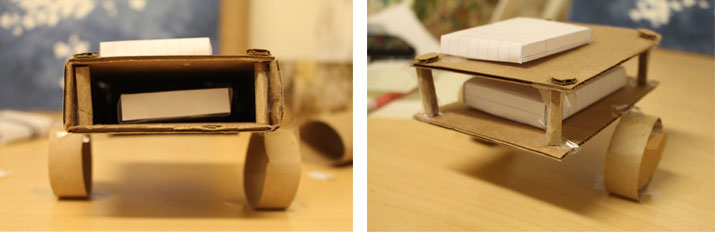

Projects
Toshiba Satellite C75D Screen Repair
After my Toshiba Satellite C75D laptop screen broke, I repaired it myself. The first step was removing the screen from the computer, which involved first turning off the machine and removing the battery for safety. I then removed the screws attaching the border of the screen and used a prying tool to unhook the small plastic hinges attaching the border around the screen to the back casing as shown below.
After the casing was off I located the part number of the screen (LP173WD1). Luckily, I found a replacement on Amazon.com for only $55.00. I verified the size and ordered it. When the new screen arrived I got to work installing it. I detached the wire on the back of the broken screen connecting it to the motherboard and removed the screws form the metal holders on the sides.
Next the new screen was ready to be put into place. I plugged it into the motherboard, re-attached all of the screws, and clicked the casing back into place. I put in the battery and turned on my computer and it worked, no more broken screen!
Paper Circuit 4th of July Card
One of my favorite hobbies is making greeting cards, and when I learned about paper circuits, I knew I could make a card using the technique. Paper circuits are basically what they sound like: circuits made on paper. Instead of using fiberglass as a base like a typical PCB, paper is used. Copper tape is then used as "traces" and can be cut and folded as needed. Components can then be either taped or carefully soldered to the copper tape.
For my first paper circuit project I made a 4th of July card for my parents. I first designed what I wanted my card to look like on scrap paper and then bought copper tape, SMD LEDs, and a 3V coin cell battery. After the design I could start constructing. I cut the copper tape in half for thinner strips and laid it out to mimic fireworks. One strip of the fireworks was connected to the positive side of the battery and the other was to the negative side and the SMD LED was placed accordingly and soldered for a strong hold. Since I didn't want the card to always be lit up, I made a button by placing foam padding around the battery and paper above it. Once someone presses down on the paper, the padding squishes and the positive line connecting all of the LEDS is connected, completing the circuit and making the lights illuminate.
This project was definitely something unique that I would want to try again. I think paper circuits would be great for teaching children about electronics in an inexpensive and easy way.
Qdoba-Themed Choose Your Own Adventure Game

In my Computer Science I class, I challenged myself to make each one of my programming projects Qdoba-themed, and the final project was a culmination of that. I created a choose your own adventure game that stars a heroic Qdoba inspector (you) whose task is to visit Qdobas throughout the United States and figure out which one is making fake, sub-par burritos. Buttons along the right side of the GUI allow you to go north, south, east, and west, and buttons along the bottom allow the player to interact with each room as follows:
Pickup - If there's an item in the room that's light enough to carry, puts it into the player's bag
Drop - Removes a specified item from the player's bag and places it in their current room
Visit HQ - Transports player to the Qdoba headquarters to report the fake Qdoba
Eat - The player can consume an item from their bag if it's edible
Look - Displays a description of the current room
List - Displays the items in the player's bag
This game was written in Java using the software BlueJ. I used both local and global variables, an array list to create the bag of items, and a hashmap to allow the player to move in between rooms. I also created a test class to simulate a player moving through each room and winning the game to ensure that my program worked correctly.

Smart Phone Simulation
In this project for my Computer Science I class, I used BlueJ to create a Java class to simulate basic functionality of a smart phone. The owner "pretends" to do basic tasks such as send texts, stream video, and stream audio. The program can then print a monthly statement summarizing the cost of the services used.

First I created the class MyPhone with private instance variables for things to be used and changed throughout the class such as number of texts, battery life, and the phone number. I then used a constructer to set the name and phone number to what the user entered and initialized variables for number of texts and battery life to 0.
After that I created mutator methods to modify the class fields and used private helper methods within them to print the monthly statement, read texts, stream video, etc.
I prevented user error by not allowing for negative minutes to be entered when the user sets the amount of time to charge the battery and stream audio and video. I also added a wifi capability which used a boolean flag called wiFiOn to identify if wifi is on or off. If it's on, no data will be used when streaming audio and video but the battery life will still decreace.
Finally I created a class called MyPhoneTest to error check my program. It instantiates two phones for different customer names and invokes methods with a variety of parameter values to test for accuracy. If the results are not as expected, an error message is displayed.
SumoBot Robot Competition
I built a "SumoBot" with a group of three other students in my Introduction to Engineering Design II class. This robot followed a line into a circle arena then tried to push the opponent robot out of the arena to win.
 Rules were as follows:
2. The robots have a maximum size of 15cm x 20cm x 25cm.
3. Each device will use the Arduino board for sensor, motor control and any other computations required.
4. Each device is autonomous.
5. Each device will be started and stopped with a clearly labeled and easily accessible switch.
6. Use of refuse materials to construct the robot is prohibited.
7. Budget: Maximum of $69.57 for materials - not including the Arduino.
The first step was to brainstorm possible designs for the robot. We made a morphological chart of possibilities and then constructed cardboard prototypes to see how the designs would look. We ended up deciding on a robot with a three sensor array to sense the line, ultrasonic sensor to sense the other robot, and a ramp in the front to push.

After that we made a SolidWorks model of the robot and milled out the parts (top, base, sides, front, back, and wheels) on Haas CNC machines. Once the parts were milled we drilled holes and screwed everything together.

Once it was assembled I could start working on the programming. I coded the robot to run in a straight line, spin to calibrate the line sensor, then follow the line. Once the line sensor saw all white (the edge of the circle), the robot went into "sumo mode." It went forward to the center of the circle then spun around until the ultrasonic sensor detected another object within range. When an object was detected our robot moved forward and pushed it until it was forced out of the arena.
Line-Following Robot
For my first college engineering class (EGR 106) final, I worked with a partner to create a line following robot with the following guidelines:
2. Each device must incorporate one part designed by the team and machined using the CNC machines in the milling lab.
3. No use of the 3D printer.
4. Each device will use the Arduino board for sensor, motor control, and any other computations required.
5. Each device is autonomous.
6. Prohibited materials include: cardboard, paper, wood, tape (as a method of jointing), and refuse materials (beverage containers, paper towel tubes, etc.).
7. Budget: Maximum of $40 for materials ~ not including the Arduino.
Robots were scored based on how far and fast they navigated a path consisting of a straight line, gentle curve, more extreme curve, and a right angle.
To start, my partner and I came up with a list of specifications our robot had to meet. We then did some benchmarking and brainstorming and finally came up with a morphological chart of three different concepts to try. Above are two of the prototypes I constructed out of cardboard, tape, and loose leaf based on these concepts.
As we started gathering the parts to build our final robot, my partner and I realized that we would have to divert from our original prototype design. In order to keep the robot stable, we added a small piece of plastic at the front. We also decided to use only one deck to stay on budget and had to add weight to the end to prevent skidding.
Finally, here's a video of the completed project. We ended up naming the robot "Burnout" since it burnt out a 10k resistor and my partner's hand. It successfully completed the entire track with a record time of 23.5 seconds, earning us an A!
I wrote the program for the robot using the Arduino IDE software. I was also in charge of figuring out the schematic for the wiring and adjusting the program based on how it caused the robot to perform.

Materials used: Arduino UNO, SainSmart Arduino Motor Shield, tamiya DC dual motor, tamiya wheels X2, battery pack, AA batteries X6, plastic pieces from milling lab, small breadboard X2, IR LED X2, phototransistor X2, 1k resistor X2, 10k resistor X2, assorted wires, electrical tape, screws, and weights (washers and a bolt).
MCWT Web Design Contest


My senior year of high school I designed a five page website using Notepad++ for the MCWT's (Michigan Council of Women in Technology) web design competition to the theme of “Ancestors: OMG.” The criteria was to construct and launch a website about three older relatives. I also presented my website to a panel of judges as part of being selected as a finalist.

This was my first time entering the competition and I entered in the advanced category and placed fourth. My prize included $75 and a trip to Mercedes-Benz Financial Services, which later helped me get a co-op working in the IT department there.
I used Photoshop to make graphics and add effects to pictures and FileZilla to upload my site to the MCWT server.